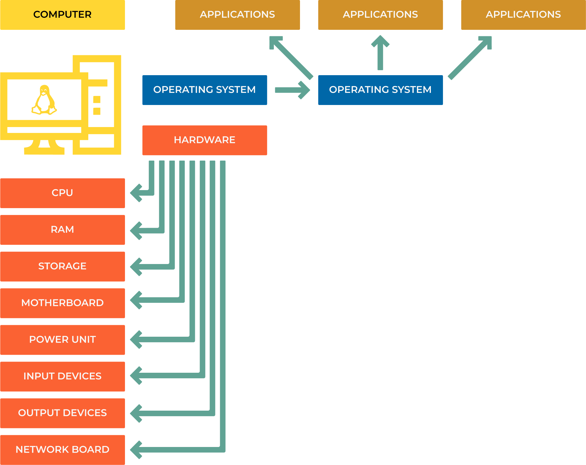
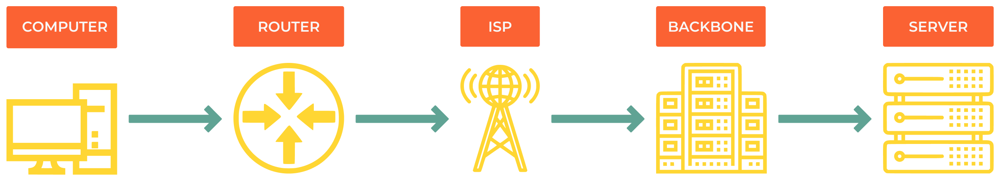

1.0 Computer and Network Basics
Understanding how computers and networks work is essential for DevOps engineers. This chapter covers the fundamental concepts you need to know.
Computer
Think of a computer like a highly organized office building where different departments work together to complete tasks.
{kind=link}

Hardware Components
Central Processing Unit (CPU)
The “brain” that executes instructions. Like a super-fast calculator that can perform billions of operations per second.
Example: When you click a button in an app, the CPU processes that click and decides what should happen next.
Memory (RAM and Storage)
RAM (Random Access Memory): Think of it as your desk workspace - it holds information you’re actively working with. When you close an application, this data disappears.
Storage (HDD/SSD): Like filing cabinets that keep your documents even when the power is off.
Analogy: RAM is like papers on your desk (fast access, but temporary), while storage is like a filing cabinet (slower access, but permanent).
Other Essential Components
Motherboard: The office building that connects all departments
Power Supply: The electrical system powering everything
GPU (Graphics Card): Specialized department for handling visual tasks
Input/Output Devices: Ways to communicate with the outside world (keyboard, mouse, monitor)
Note
Real-world example: When you open a program like a web browser:
CPU reads the program from storage
Loads it into RAM for quick access
GPU helps render the visual interface
You interact through input devices
Software Layers
Software works in layers, like floors in an office building:
Operating System (OS)
The building manager that coordinates everything. Examples: Windows, macOS, Linux, Android.
What it does: Manages hardware, runs programs, handles files, provides security.
Application Software
The actual workers doing specific jobs: web browsers, text editors, games, databases.
Example: When you use Chrome (application), it asks the OS to display windows, access the internet, and store bookmarks.
Drivers & Firmware
Drivers: Translators that help the OS talk to hardware
Firmware: Basic instructions built into hardware components
Analogy: Drivers are like interpreters helping departments communicate in different languages.
Networks
A network is like a postal system that lets computers send messages to each other. Instead of physical mail, they send digital data.
{kind=link}

Types of Networks
Local Area Network (LAN)
Connects devices in a small area like your home or office.
Example: Your laptop, phone, and smart TV all connected to your home WiFi router.
Wide Area Network (WAN)
Connects devices across large distances. The Internet is the biggest WAN.
Example: Sending an email from New York to Tokyo uses multiple WANs.
Personal Area Network (PAN)
Very short-range connections, usually wireless.
Example: Bluetooth connection between your phone and wireless earbuds.
Metropolitan Area Network (MAN)
Covers a city or large campus.
Example: A university network connecting all campus buildings.
How the Internet Works
The Internet is like a global highway system for data:
Your Device → Home Router → Internet Service Provider (ISP) →
Internet Backbone → Destination Server
Step-by-step example: Loading a website
You type “google.com” in your browser
Your computer asks your router “Where is google.com?”
Router asks your ISP’s DNS server
DNS server responds with Google’s IP address
Your request travels through multiple networks to reach Google’s servers
Google sends the webpage back through the same path
Note
Try this: Open a terminal and run traceroute google.com to see the actual path your data takes to reach Google!
Addressing: How Computers Find Each Other
Computers use two types of addresses, like having both a home address and a social security number.
IP Addresses vs MAC Addresses
# See your network information
ip addr show
# or shorter version
ip a
IP Address (Logical Address)
Like your home address - can change when you move to a different network.
Example: 192.168.1.100 (at home) vs 10.0.1.50 (at work)
Purpose: Routes data across networks to find the right destination.
MAC Address (Physical Address)
Like your fingerprint - unique to each network card and doesn’t change.
Example: 00:1A:2B:3C:4D:5E
Purpose: Identifies devices on the same local network.
Note
Analogy: IP addresses are like postal addresses (change when you move), while MAC addresses are like your DNA (always the same).
Private vs Public IP Addresses
Private IP Addresses (Internal Use) These are like apartment numbers within a building - they only make sense inside that building.
Address Range |
Usage |
Example |
|---|---|---|
10.0.0.0/8 |
Large organizations |
10.0.0.1 - 10.255.255.254 |
172.16.0.0/12 |
Medium-sized networks |
172.16.0.1 - 172.31.255.254 |
192.168.0.0/16 |
Home/small office networks |
192.168.0.1 - 192.168.255.254 |
127.0.0.1 |
Loopback (your own computer) |
Always 127.0.0.1 (localhost) |
Public IP Addresses Like your building’s street address - unique worldwide and accessible from the Internet.
Example: When you visit a website, you’re connecting to its public IP address.
IPv4 vs IPv6: The Address Evolution
IPv4 (Current Standard)
Format: Four numbers separated by dots
Example:
8.8.8.8(Google’s DNS server)Problem: Only ~4.3 billion possible addresses (not enough for everyone!)
IPv4 Binary Representation:
8.8.8.8 = 00001000.00001000.00001000.00001000
IPv6 (Future Standard)
Format: Eight groups of hexadecimal numbers
Example:
2001:0db8:0000:0000:1234:0ace:6006:001eSolution: 340 undecillion addresses (enough for every grain of sand on Earth!)
Note
Why the change? We’re running out of IPv4 addresses! IPv6 provides enough addresses for every device on the planet to have multiple unique addresses.
Practical Examples
Example 1: Home Network Setup
Internet (Public IP: 203.0.113.1)
↓
Router/Modem (Gateway: 192.168.1.1)
↓
Home Devices:
- Laptop: 192.168.1.100
- Phone: 192.168.1.101
- Smart TV: 192.168.1.102
Example 2: Checking Your Network
# Find your IP address
ip addr show | grep inet
# Test connectivity to Google
ping 8.8.8.8
# See the route to a website
traceroute github.com
# Check your public IP
curl ifconfig.me
Example 3: Understanding Network Troubleshooting
When a website doesn’t load, the problem could be at different layers:
Physical: Is your ethernet cable plugged in?
Network: Can you ping your router? (
ping 192.168.1.1)Internet: Can you reach external sites? (
ping 8.8.8.8)DNS: Can you resolve domain names? (
nslookup google.com)Application: Is the specific service working?
Key Takeaways
Computers are collections of hardware managed by software layers
Networks connect computers so they can communicate
IP addresses route data across networks (like postal addresses)
MAC addresses identify devices on local networks (like fingerprints)
The Internet is a global network of interconnected smaller networks
Private IPs are for internal use, public IPs are for Internet communication
Note
Next Steps:
Experiment with network commands like
ping,traceroute, andip addrSet up a simple home network to see these concepts in action
Learn about network protocols (HTTP, DNS, etc.) in the next chapter